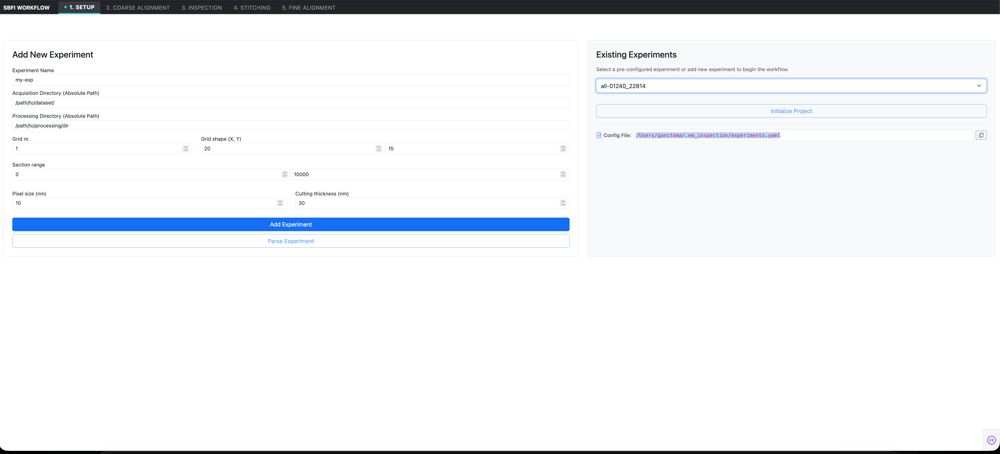

1. Setup & Project Ingestion¶
The Setup interface provides the entry point for configuring and ingesting Serial Block-Face EM datasets into the em_inspection pipeline. It registers dataset paths, sets spatial physical dimensions, and executes pre-flight validation routines to guarantee acquisition integrity before computationally intensive alignment begins.
[!NOTE] SBEMimage Compatibility The dataset ingestion and folder structure parsing in
em_inspectionis designed specifically for datasets acquired with SBEMimage, an open-source acquisition software package for serial block-face scanning electron microscopy.

Interface Walkthrough¶
The Setup tab is split into two primary panels: Add New Experiment (left) and Existing Experiments (right).
1. Add New Experiment Panel¶
Use this panel to define a new imaging run or branch an existing dataset with custom parameters:
| Input Field | Format / Example | Description |
|---|---|---|
| Experiment Name | String (my-exp or all-01240_22814) |
A unique project identifier used across all configuration files and database registries. |
| Acquisition Directory | Absolute filesystem path (/Volumes/EM_DATA/exp_01/) |
The raw root folder containing the microscope acquisition outputs from SBEMimage (e.g., sections/ and metadata). |
| Processing Directory | Absolute filesystem path (/Volumes/SCRATCH/exp_01_proc/) |
The working directory where DuckDB registries, coarse offset JSONs, meshes, and warped Zarr volumes are saved. |
| Grid nr. | Integer (1) |
The index of the imaging tile grid (e.g., 1 for g0001). Most acquisitions use a single primary grid. |
| Grid shape (X, Y) | Integer pair (20, 15) |
The total number of columns (\(X\)) and rows (\(Y\)) in the mosaic tile grid. |
| Section range | Integer range (0 to 10000) |
The initial section cutting indices defining the volume boundaries (\(Z_{first}\) to \(Z_{last}\)). |
| Pixel size (nm) | Float (10.0) |
In-plane lateral pixel resolution in nanometers (\(X-Y\)). |
| Cutting thickness (nm) | Float (30.0) |
Physical section cut thickness in nanometers (\(Z\)). |
Primary Actions¶
Add Experiment: Validates the input form against theExpConfigschema, formats cross-platform file paths, and appends the experiment entry to the persistent configuration store (~/.em_inspection/experiments.yaml).Parse Experiment: Triggers the background dataset parsing engine. The system scans the acquisition directory, parses the section directories (e.g.,s00000_g0001), and extracts tile indexing maps.
2. Existing Experiments Panel¶
For previously configured datasets, the right-hand panel enables instant project loading:
- Experiment Dropdown: Displays all projects registered in
experiments.yaml. Selecting an item automatically populates the form and prepares the application state. Initialize Project: Instantiates the activeDataServicecontext, verifies that the target processing directories exist, and connects to the experiment's DuckDB offset repository.- Config File Tracker: Displays the absolute path to the active YAML registry (typically
~/.em_inspection/experiments.yaml). A dedicated copy button allows you to quickly copy the path to the system clipboard for external editing or CLI automation.
Pre-Flight Integrity Checks¶
When you click Parse Experiment, em_inspection runs automated validation checks to identify acquisition anomalies early:
[!NOTE] Section Discontinuity Detection The validator checks section folders across the range \([Z_{first}, Z_{last}]\). Any detected missing section indices are stored in a dedicated file:
Downstream steps automatically account for these missing indices to prevent indexing misalignment.[!WARNING] Tile Coordinate Map Verification The validator verifies each section's
Flagged sections should be reviewed before proceeding to coarse offset calculations.tile_id_map.json. Any sections with missing or incomplete tile mappings are recorded in:
Next Steps¶
Once the experiment is parsed and initialized, proceed to 2. Coarse Alignment to calculate translational shift vectors across tile overlaps.